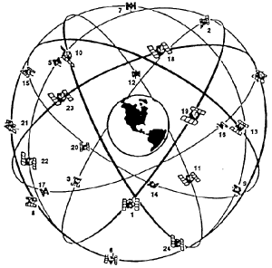
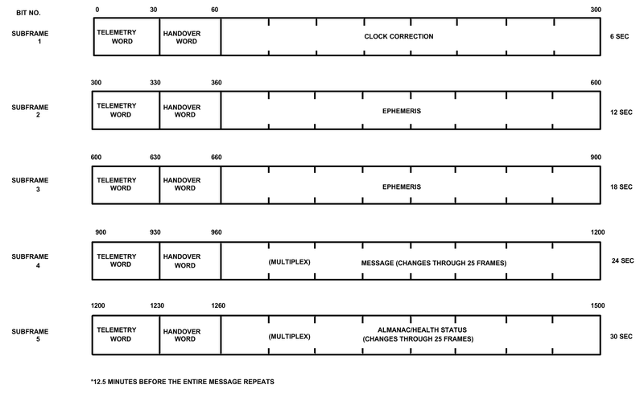
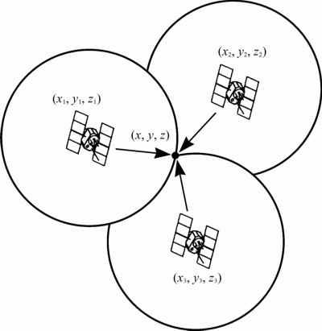

GPS System Overview
GPS, which stands for Global Positioning System, is the only system today able to show you the exact position on the Earth anytime, in any weather, anywhere. GPS has three parts: the space segment, the user segment, and the control segment.
Space Segment

GPS Satellite Constellation
The GPS space segment uses a total of 24 satellites in a constellation of six orbiting planes. This configuration provides for at least four equally spaced satellites within each of the six orbital planes. The orbital planes have an inclination of 55° relative to the earth’s equator. Figure 2.1 illustrates the GPS satellite constellation. At 20,200km, GPS satellites are able to complete one orbit around the earth every 11 hours and 58 minutes. Since the earth is rotating under the satellites, the satellites trace a track over the earth’s surface, which repeats every 23 hours 56 minutes. A user at a fixed location on the ground will observe the same satellite each day passing through the same track in the sky, but the satellite will rise and set four minutes earlier each day, due to the four minute difference between the rotational period of the earth and two orbital periods of a satellite. The satellites are positioned in orbital planes so that four or more satellites, with a good geometric relationship for positioning, will normally be observable at every location on earth [USCG, 1996].
The satellites transmit ranging signals on two L-band frequencies: Link 1 (L1) at 1575.42MHz and Link 2 (L2) at 1227.6 MHz. The satellite signals are transmitted using spread-spectrum techniques, employing two different ranging codes as the spreading functions: a 1.023 MHz coarse/acquisition code (C/A-code) on L1 and a 10.23 MHz precision code (P-code) on both L1 and L2. Either the C/A code or the P-code can be used to determine the range between the satellite and the user, however, the P-code is normally encrypted and available only to authorised users. When encrypted the P-code is known as the Y-code. A 50Hz navigation message is superimposed on both the P(Y)-code and the C/A-code. The navigation message includes satellite clock-bias data, satellite ephemeris (precise orbital) data for the transmitting satellite, ionospheric signal propagation correction data, and satellite almanac (coarse orbital) data for the entire constellation [USCG, 1996].
Control Segment
The control segment consists primarily of a Master Control Station (MCS), at Falcon Air Force Base (AFB) in Colorado Springs, USA plus monitor stations (MS) and ground antennas (GA) at various locations around the world. The monitor stations are located at Falcon AFB, Hawaii, Kwajalein, Diego Garcia, and Ascension. All monitor stations except Hawaii and Falcon AFB are also equipped with ground antennas.
The MCS is the central processing facility for the Control Segment and is responsible for monitoring and managing the satellite constellation. The MCS functions include control of satellite-keeping manoeuvres, reconfiguration of redundant satellite equipment, regularly updating the navigation messages transmitted by the satellites, and various other satellite health monitoring and maintenance activities. The monitor stations passively track all GPS satellites in view, collecting ranging data from each satellite. This information is transmitted to the MCS where the satellite ephemeris and clock parameters are estimated and predicted. The MCS uses the ground antennas to periodically upload the ephemeris and clock data to each satellite for retransmission in the navigation message. Communication between the MCS the MS and GA are typically accomplished via the U.S. Defense Satellite Communication System (DSCS).
User Segment
The user segment consists of the appropriate receivers designed to receive, decode and process the GPS satellite signals. With this equipment, a user can receive GPS transmissions and compute their precise position, velocity, and time (PVT). This segment includes a variety of products used for different applications: marine navigation, map surveying, tracking vehicles, search and rescue, and many others.
GPS Satellite Signals
C/A-Code
The C/A-code consists of a 1023 bit pseudorandom noise (PRN) code with a clock rate of 1.023 MHz which repeats every millisecond. The short length of the C/A-code sequence is designed to enable a receiver to rapidly acquire the satellite signals, which help the receiver transition to the longer P-code. A different PRN is assigned to each GPS satellite and selected from a set of codes called Gold codes. The Gold codes are designed to minimise the probability that a receiver will mistake one code for another (minimise the cross-correlation). The C/A-code is transmitted only on L1, is not encrypted and therefore available to all users of GPS.
P(Y)-Code
The P-code is a 10.23 MHz PRN code sequence that is 267 days in length. Each of the GPS satellites is assigned a unique 7-day segment of this code that restarts every Saturday/Sunday midnight GPS time. The P-code is normally encrypted into the Y-code to protect the user from spoofing. Since the satellites have the capability to transmit either the P- or Y-code, it is often referred to as the P(Y)-code. The P(Y)-code is transmitted by each satellite on both the L1 and L2. On L1, the P(Y)-code is 90 out of carrier phase with the C/A-code.
Navigation Message
A 50Hz navigation message is superimposed on both the P(Y) code and the C/A-code. The navigation message includes data unique to the transmitting satellite and data common to all satellites. The data contains the time of transmission of the message, a Hand Over Word (HOW) for the transition from the C/A-code to P(Y) code tracking, clock correction, ephemeris, and health data for the transmitting satellite, almanac and health data for all satellites, coefficients for the ionospheric delay model, and coefficients to calculate Universal Coordinated Time (UTC).

The Navigation Message
The navigation message consists of 25 frames of data, each frame consisting of 1,500 bits. Each frame is divided into 5 sub frames of 300 bits each. At the 50 Hz transmission rate, it takes 6 seconds to receive a sub frame, 30 seconds to receive one data frame, and 12.5 minutes to receive all 25 frames. Sub frames 1, 2 and 3 have the same data format for all 25 frames. This allows the receiver to obtain critical satellite-specific data within 30 seconds. Sub frame 1 contains the clock correction for the transmitting satellite, as well as parameters describing the accuracy and health of the broadcast signal. Sub frames 2 and 3 contain ephemeris (precise orbital) parameters used to compute the location of the satellite for the positioning equations. Sub frames 4 and 5 have data which cycle through the 25 data frames. They contain data which is common to all satellites and less critical for a receiver to acquire quickly. Sub frames 4 and 5 contain almanac (coarse orbital) data and low-precision clock corrections, simplified health and configuration status for every satellite, user text messages, and the coefficients for the ionospheric model and UTC calculation [USCG, 1996].
Position Calculations

Three pseudorange measurements
Position measurement is based on the principle of time of arrival (TOA) ranging. The time taken from a satellite at a known location to reach a receiver is multiplied by the speed of the signal to obtain the satellite-to-receiver range. Multiple signals received by a receiver from multiple satellites at known locations are used to determine its location. Because of clock offset between satellite and receiver, propagation delays, and other errors, it is impossible to measure the actual range, so a pseudorange is measured. The clock offset is the constant difference in the time reading between the satellite clock and receiver clock. To determine the position of the receiver, the receiver needs to know the pseudoranges to the satellites being tracked and the positions of those satellites. Pseudoranges are obtained by multiplying the apparent signal propagation time by the speed of light. The signal propagation time is determined by measuring the time offset required to match the received satellite code to an internally generated replica of the code. This process is known as correlation [Zhao, 1997].
For the 3D case, three satellites are required. The pseudoranges yield spheres of position (Figure 2.3). Clearly, a unique receiver position (
where (
Since the receiver clock used to measure the signal propagation times is not synchronized to GPS time, the clock offset between receiver time and GPS time must be determined. This parameter can be calculated by adding a fourth satellite. By design, all of the satellite clocks are synchronized using very precise atomic clocks. The cheap crystal oscillators used in the receivers introduce a time offset (clock bias) between the receiver and the GPS clocks so one must consider their effects in the computation. The receiver clock bias is the time offset of the receiver, and it is the same for each satellite. Thus both the receiver position and clock offset can be derived from the following equations:
where (
GPS Receiver Architectures
There are many types of receiver architectures, the main ones being listed below: Continuous receivers Sequential receivers Multiplex receivers All-In-View receivers Time Transfer Receivers Differential GPS (DGPS) receivers * Surveying receivers
Continuous Receivers
A continuous tracking receiver has five or more hardware channels to track four satellites simultaneously plus other channels to acquire new satellites. Due to their greater complexity, these receivers were traditionally the most expensive but offer the best performance and versatility. The multi-channel receiver uses the fifth channel to read the NAVigation (NAV) message of the next satellite to be used when the receiver changes the satellite selections. It also uses the fifth channel in conjunction with each other of the other four channels to perform dual frequency measurements as well as differential channel delay measurements. Individual, dedicated tracking channels enable the receivers to maintain accuracy under high dynamics, provide the best anti-jamming (A-J) performance, and have the lowest time-to-first-fix (TTFF). This type of receiver is best suited for high dynamic vehicles such as fighter aircraft, vehicles requiring low TTFF such as submarines, plus any user requiring good A-J performance.
Sequential Receivers
A sequential GPS receiver tracks the necessary satellites by typically using one or two hardware channels. The set will track one satellite at a time, time tag the measurements and combine them when all four satellite pseudoranges have been measured. These receivers are among the least expensive available, but they cannot operate under high dynamics and have the slowest TTFF performance.
One-Channel Sequential Receivers
A one-channel sequential receiver makes four pseudorange measurements on both the L1 and L2 frequencies in order to determine a position and compensate for ionospheric delay. The NAV message from each of the satellites must also be read to obtain ephemeris data. To determine an initial position, the receiver must perform the following operations:
- C/A-code search for a Space Vehicle (SV)
- C/A-code/carrier centre
- data bit synchronization
- frame synchronization and Z-count
- HOW
- P-code carrier centre
- data demodulation
- ionospheric measurements
Once these operation are complete for one SV, the receiver must perform them again for three other SVs. The four pseudorange measurements must be propagated to the same reference time before a navigation solution is generated. Any movement of the Host Vehicle (HV) during the time the receiver collects the four pseudoranges will reduce the accuracy of the position, velocity and time calculations in the receiver. One-channel sequential receivers are limited to low-dynamic or stationary applications.
Two-Channel Sequential Receivers
Two-channel sequential receivers have been developed for use on medium-dynamic vehicles such as helicopters. During initial power-up each channel operates like a one-channel receiver. After four SVs have been acquired, one channel is dedicated to navigation (pseudorange measurements, carrier tracking, etc.) while the other channel reads the NAV message from each satellite. Both channels are also used to perform dual frequency measurements to compensate for ionospheric delay and to measure differential channel delay. Two-channel sequential receivers decrease the time it takes to start navigating by better than one minute when compared to one-channel sequential receivers.
Multiplex (MUX) Receivers
A MUX receiver switches at a fast rate (typically 50 Hz) between the satellites being tracked continuously collecting sampled data to maintain two to eight signal processing algorithms in software. In addition, the 50 Hz NAV message data is read continuously from all satellites. In single channel MUX receivers the hardware channel is time shared and only one code generator and one carrier synthesiser is required to track the satellites. However, a multiplex receiver’s measured carrier to noise ratio (C/N) for any satellite signal will be (where n is the number of satellites being tracked) below that of a continuous tracking receiver. Consequently, for military receivers, the MUX technique has the disadvantage of lower resistance to jamming and interference when compared to continuous tracking receivers. The MUX technique is more commonly found in commercial receivers where the reduced hardware cost can result in a less expensive product and where interference may be less of a concern.
"All-In-View" Receivers
Traditionally, GPS receivers choose the four satellites of those available that give the best geometry to perform a position fix. However, in situations where one or more of the satellites are temporally obscured from the antenna’s view, the receiver will have to acquire additional satellite signals to generate a continuous PVT solution. The PVT solution degrades until the new satellites are acquired. One method is to have a receiver which uses all available satellites in view to generate a solution. The inherent advantage of this receiver is that if it is tracking six or seven SVs and a satellite becomes obscured, the receiver will continue to provide a PVT solution with little, if any, degradation. In general, over-determined solutions improve the accuracy of the receivers.
Time Transfer Receivers
GPS receivers are also used for precise time dissemination applications. These precise time GPS receivers need only one GPS satellite for precise time dissemination if the receiver is stationary on a precisely known location and the only ‘unknown’ is its own clock offset from GPS time and therefore from UTC. To obtain the necessary precise position, the receiver either receives it as an operator input or uses four satellites to determine its own position. These receivers typically include an internal oscillator or an optional external frequency source (rubidium or caesium). Whenever the receiver is tracking a satellite, it generates 1, 5, or 10 MHz reference frequencies that are synchronised to UTC time. If no satellites are visible, the reference frequencies are derived from the internal or external frequency source. The receivers can provide either stand-alone (uncoordinated) or coordinated time-transfer operations.
Differential GPS (DGPS) Receivers
DGPS receivers are used in applications where enhanced accuracy of the PVT solution is required. DGPS is based on the principle that receivers in the same vicinity will see similar errors on a particular satellite ranging signal. In general, the DGPS technique uses measurements from a reference receiver established at a known location, along with differencing algorithms, to remove common satellite and signal propagation errors from the PVT solutions of mobile receivers operating in the vicinity of the reference station. The residual errors that remain uncorrected are due to multi-path and noise in the receivers. DGPS techniques can be applied to the real-time PVT solution or to recorded measurement data. Real-time DGPS requires a data link to pass the reference measurements to the mobile receiver. DGPS techniques can be applied to non-differential receivers if the raw measurements data and navigation message are accessible.
Surveying Receivers
Formal surveys are usually conducted with one surveying receiver located in a previously surveyed location and a second receiver at the new location to be surveyed. The receiver at the previously surveyed location acts as a DGPS reference receiver and the receiver at the new location acts as a DGPS ‘mobile’ receiver. The ‘mobile’ receiver is usually fixed at the new location for a period of time to collect redundant measurements and further improve the accuracy of the survey by post-processing to remove or reduce residual errors such as receiver measurement noise. Survey receivers must include considerable data recording capability. They may also include the capability to store additional information about the characteristics of the surveyed site. The signal processing techniques of GPS surveying receivers can be divided into four categories:
- Non-differential GPS
- Ranging-Code Differential (RCD)
- Carrier-Phase Differential (Interferometry) (CPD)
- Codeless Carrier-Phase Differential
Surveying receivers may use RCD to determine an initial survey position that aids the initialisation process. The primary surveying mode of most receivers is CPD. The carrier-phase measurements and algorithms enable centimetre and sub-centimetre accuracies due to the lower measurement noise when compared to pseudorange measurements. To achieve surveying accuracies dual frequency (P-code) measurements are essential, in order to perform ionospheric delay measurements. Since the P-code is normally available as the Y-code, most surveying receivers use a ‘codeless’ technique to perform ionospheric delay measurements. One technique uses spectral compressors to compress the GPS signals into audio or sub-audio bands. A processor is used to extract the frequency and phase of each satellite in view. Codeless techniques can also be used to make CPD measurements, but the C/A-code navigation message must also be read to obtain the satellite ephemeris if real-time outputs are desired.